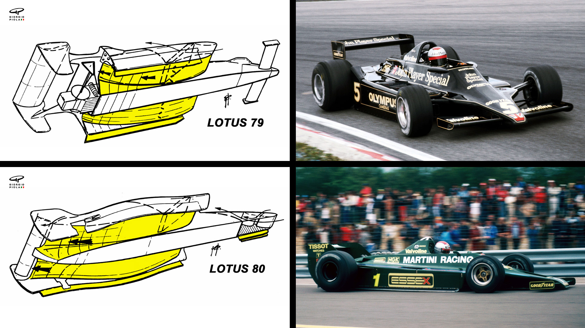
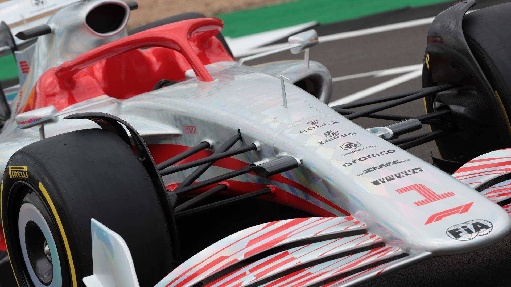
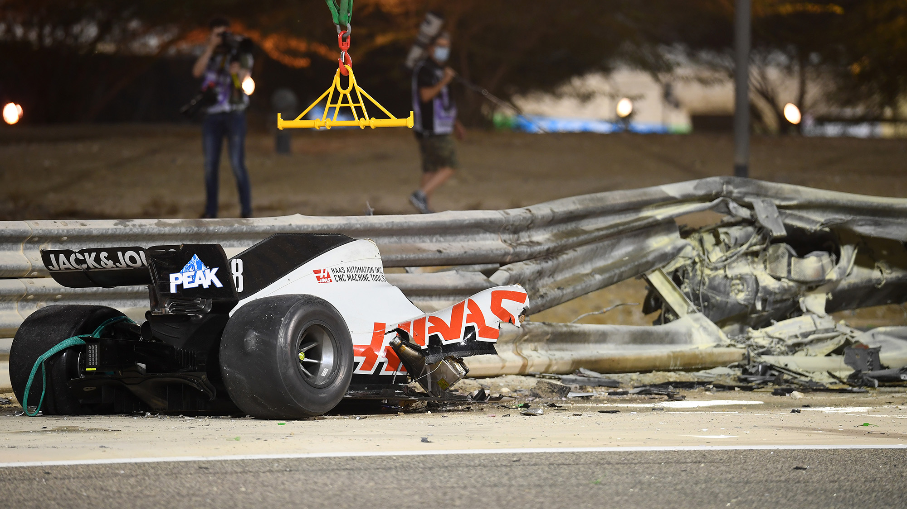
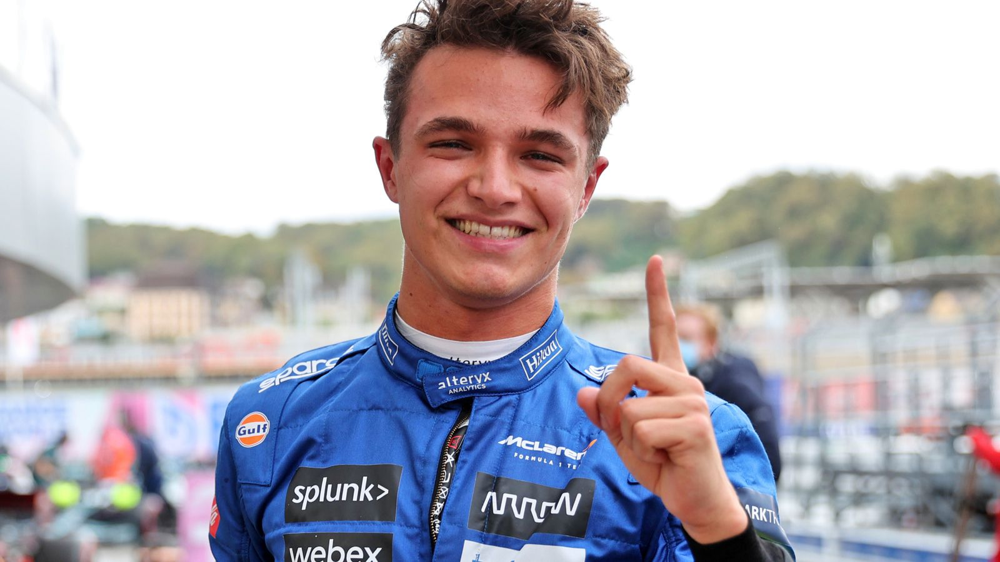

1 February 2021 - With the 2021 season long over, all attention is now on the sport’s preparation for 2022’s new rules. Formula 1 will undergo one of the biggest technical overhauls for next season. With this seismic shift in aerodynamic regulations, this year will act as a reset button for the teams after 8 straight years of Mercedes constructor’s dominance. Along with this are changes in the driver market, the return of some old track favorites, and the addition of a new race in the calendar. Here’s all that we know so far:
The return of ground effect
The largest difference to the new F1 package is the return of the long-banned ground effect formula. Since 1982, ground effect underbody tunnels had not been permitted in Formula 1, but calls for its introduction have grown louder in recent years, and 40 years later, the sport finally gets it back. The Federation Internationale de l'Automobile (FIA) has sought to reduce the current reliance on wings for downforce, which have been for “dirty air” that has made close-quarters wheel-to-wheel racing difficult in the past few years.
The air goes via two Venturi tunnels by producing a very noticeable entry at the front of the floor. In order to create a huge amount of suction underneath the car, the air is compressed via the point closest to the ground, resulting in an extreme low-pressure area. This lowers the wake produced by various bodywork components by relying more on the floor for downforce. The tires as well will change, with F1 switching from 13-inch wheels to 18-inch ones.
For the next era of Formula One cars, there will be a lot of changes to the amount of bodywork. The highly complicated bargeboards will be totally removed in 2022, and a new type of "wheel bodywork" has replaced them with the goal of reducing the effects of the wheels' wake as they rotate. The front wheels now have a deflector over the top to help with this, and the rear wheels have a deflector as well.
For the time being, the drag-reduction system (DRS), which is a driver-adjustable bodywork that reduces aerodynamic drag in order to increase top speed and promote overtaking, remains. However, this decision can be revisited in the future if the new cars produce the intended effect. And so far, the numbers look good, with the FIA estimating that cars in the wake of another car now retain 86% of their downforce rather than the current 55%.
Only springs and dampers are now authorized in suspension, therefore torsion bars alone will no longer be permitted. To make the suspension systems more efficient, heave springs, also known as inerters, will be forbidden. No external mounting points may be authorized now that suspension uprights must be integrated only within the wheel assembly.
As a result of the new design, the front wing can now be made up of a maximum of four parts in total. Most importantly, the endplates now have a distinct appearance, with a smooth transition from the front wing parts to a single-piece endplate that is upturned like a plane's wing. A larger front nose has been adopted, as well as stronger chassis sides to deal with side hits. In the case of a serious enough crash, the power unit will separate from the chassis without exposing or rupturing the gasoline tank.
Drivers now expect to be more on edge, which is expected due to the massive downforce cost. The offset between the 2021 and 2022 lap times is expected to be around 5-6 seconds, but regardless of the slower cars, fans are excited about the prospect of better racing.
Speed or safety?
Apart from better racing, there’s another reason for this change. With the cars getting faster and faster every year, the FIA and its teams are also interested in the safety of its drivers. Traditionally, safety regulations have been altered, but if F1 continues to allow teams to make their cars faster and quicker (the last era of cars being the fastest ever) it becomes increasingly difficult to maintain safety.
This was the dilemma the sport was facing in the 80s and 90s with cars getting much faster and deadlier, ultimately culminating in the death of 3-time world champion Ayrton Senna and loved rookie Roland Ratzenberger during the 1994 San Marino Grand Prix. And following former French driver Romain Grosjean’s horror crash in the opening laps of the 2020 Bahrain Grand Prix, which cut his last season short by a few races, the FIA is very much interested in the welfare of its superstars.
Question marks
Some, such as McLaren star Lando Norris, have raised questions as the sport adapts to the new regulations. Norris believes the aerodynamic-heavy changes won’t affect his comfort with the car as driving controls themselves and particular methods of the manufacture will not change. However, he believes that it will feel different and the drivers will have to change driving styles.
“A lot of other things that allow you to be comfortable are more on [the] internal side of it,” Norris admitted. "Some of it, if you need confidence under braking, it doesn't always mean that the car's not good under braking – it can be the brake pedal that you have, and your feeling with the brake pedal."
“Is it too soft? Is it too stiff? You know when you're about to lock up and things like that so, with a lot of it, the car and how it's all built is going to be the same but, because the cars are gonna be so different, I've got no idea how it's going to be."
Others meanwhile, namely 2021 world champion Max Verstappen, feel no different to the change. When Asked about whether he'll need to change his driving style to suit the new regulations, Verstappen said he's sad to see the old cars go but is excited about the challenge of 2022.

"Everyone always says, 'What is your driving style like?'” the Dutchman responded. "Well, I don't think I actually have one, it's just you adapt to the situation. That is your driving style because, if the car is understeery, you have to adapt yourself to the understeer. If the car is oversteery, you have to adapt yourself to that. So you cannot say, 'This is my driving style and that's how I'm going to drive.’”
"It's impossible because, sometimes, it just doesn't work with the material you have. So I think adaptation at the end of the day is key."
Whatever may be the case, the overhaul has been in the works for 4 hard years, and the FIA is excited and proud to put these regulation changes in effect. Ross Brawn, the managing director of Formula 1, welcomes the huge changes and says that it will provide an excellent, and unique, opportunity to make Formula 1 the most exciting motorsport in the world.

"So this is the start of a new journey, a new philosophy, a new culture, where the raceability of these cars is going to be vital to future Formula 1," Brawn said. "And why do we do that? We do that because we want to entertain the fans, we want to engage the fans, we want new fans to come into the sport. We want to respect and maintain our existing fans so they remain excited about the pinnacle of motorsport."
When does it start?
The first three days of pre-season testing will be held at the Barcelona circuit from February 23 to 25, with the second block of testing taking place in Bahrain from March 11 to 13. The season will then officially start a week later on March 20 at the Bahrain International Circuit, marking the 2nd year in succession and the 3rd overall of Bahrain holding the first race of the season. We’re about to see the world’s greatest racing series in a few weeks, so hold tight!
See also: Formula 1 releases record 23-race 2022 season schedule